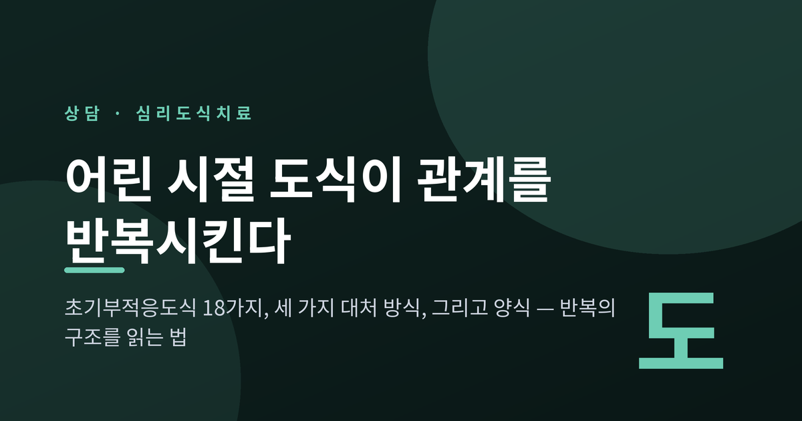
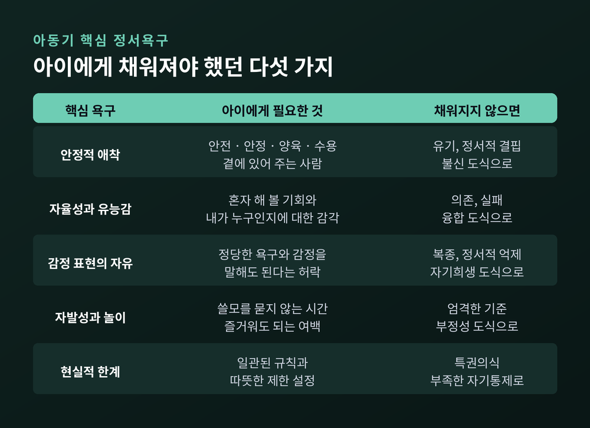
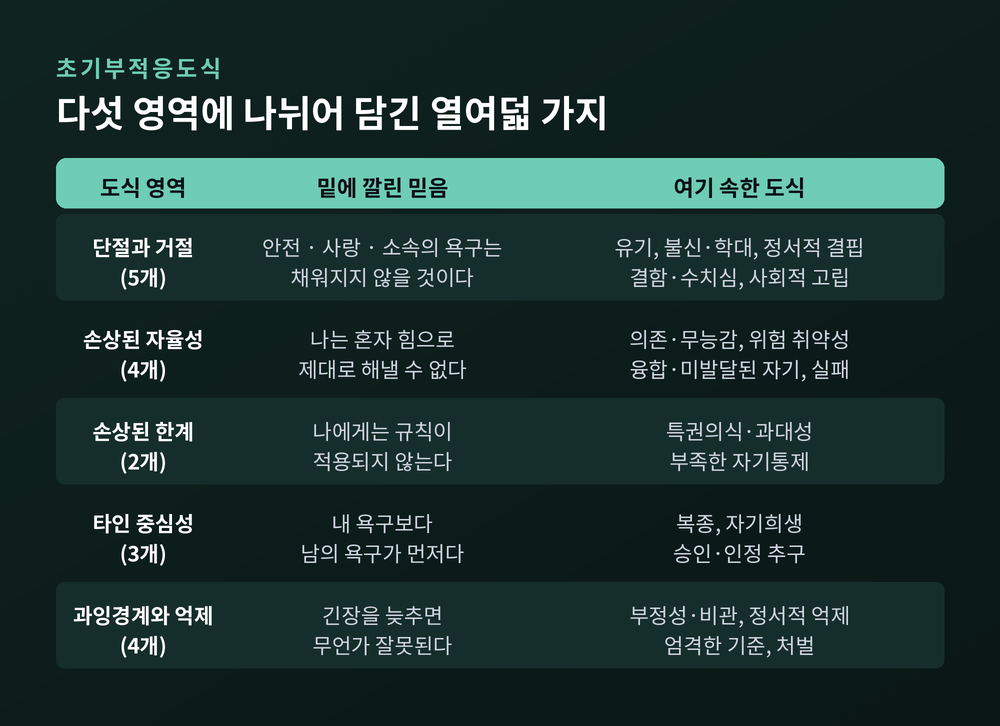
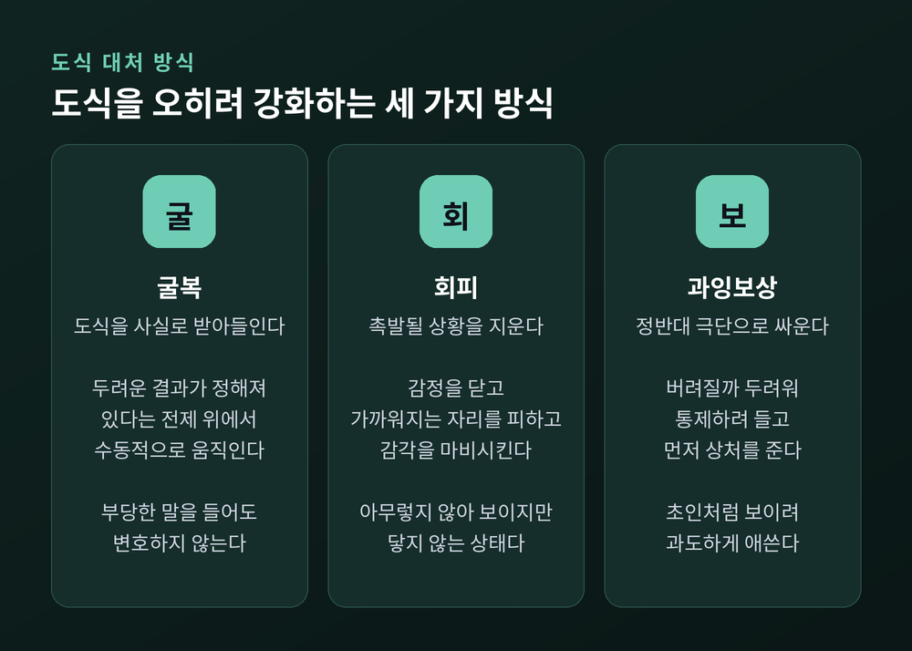
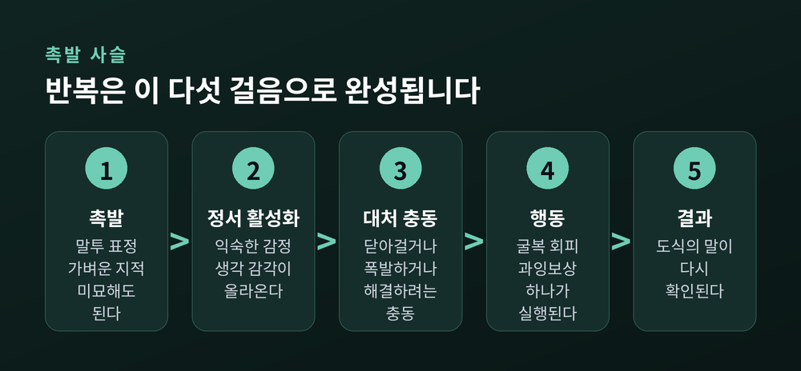
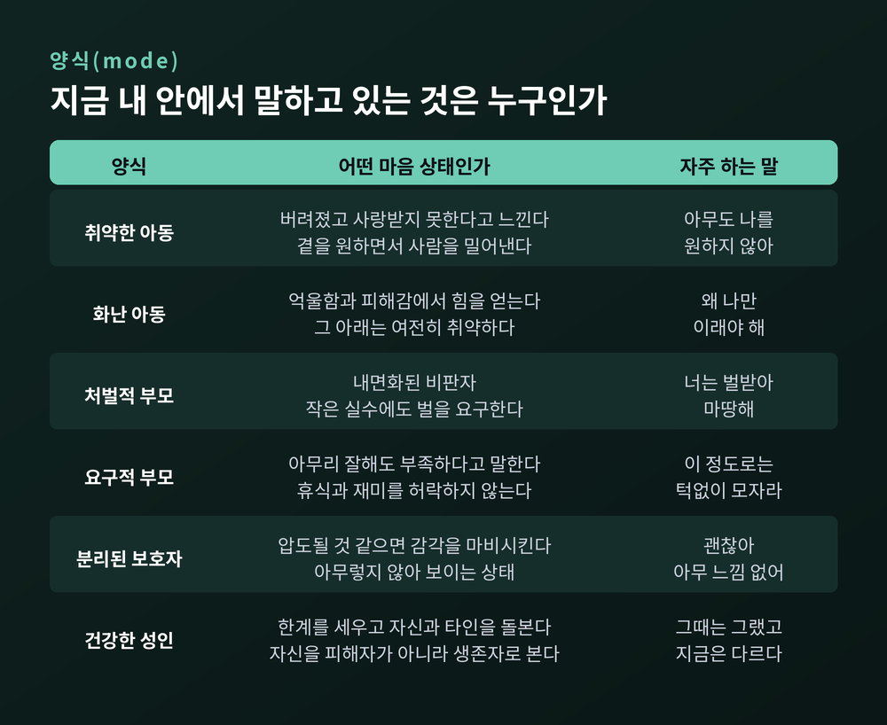
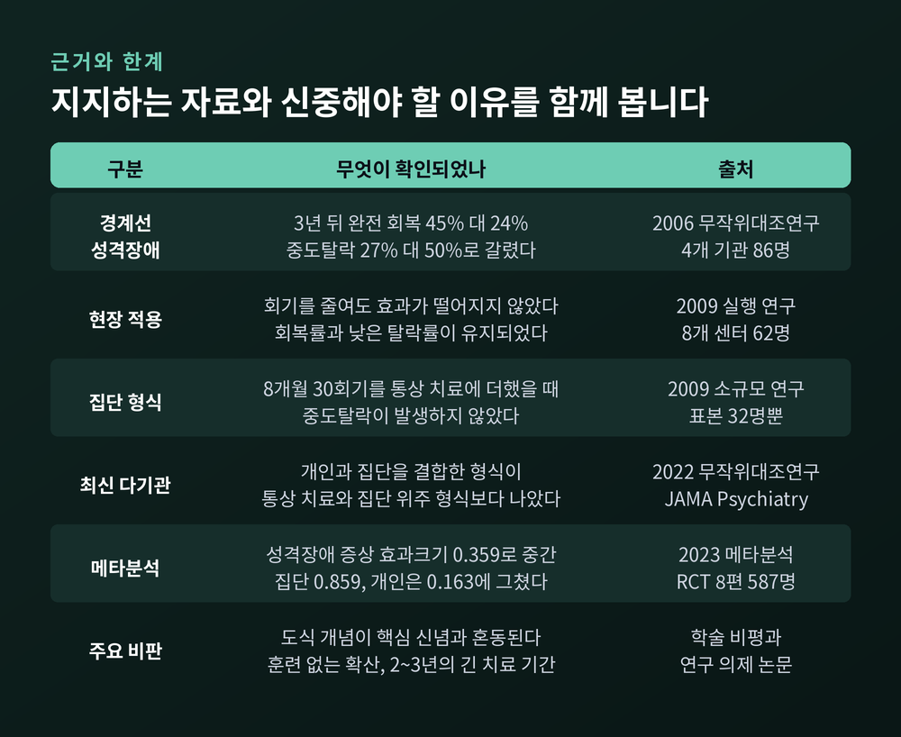

세 줄 요약
이번 글에서는 심리도식치료를 정리해 보겠습니다. 어린 시절에 만들어진 도식이 어떤 경로로 지금의 관계 패턴을 반복시키는지, 그리고 상담실에서는 그것을 어떻게 다루는지 살펴보려 합니다. 자기 진단이 아니라 이해를 위한 글로 읽어주시면 좋겠습니다.
심리도식치료를 만든 제프리 영은 인지행동치료의 창시자 아론 벡의 제자였습니다.
그는 인지행동치료가 표면의 생각을 바꾸는 데는 강하지만, 오래된 성격 패턴과 만성적인 관계 문제까지는 잘 닿지 못한다고 보았습니다. 그래서 1980년대부터 인지행동치료를 확장하는 방향으로 새로운 모델을 발전시켰고, 1990년대 초에 이를 체계화합니다.
재료는 한 가지가 아니었습니다. 인지행동치료에 애착이론, 게슈탈트 치료, 구성주의, 정신역동의 대상관계 이론이 함께 들어갔습니다. 그래서 심리도식치료는 하나의 학파라기보다 통합적 심리치료로 분류됩니다.
대상도 분명합니다. 성격장애, 만성 우울, 만성 불안, 섭식장애처럼 오래 지속되는 문제입니다. 다른 치료에서 재발했거나 반응하지 않은 경우에 자주 적용됩니다.
영은 도식을 "인생의 덫"이라고도 불렀습니다. 걸려드는 사람이 어리석어서가 아니라, 덫이 삶의 초기에 놓였기 때문입니다.
심리도식치료의 출발점은 결핍이 아니라 욕구입니다. 아동기에 반드시 채워져야 할 핵심 정서욕구를 다섯 가지로 봅니다.
첫째, 타인과의 안정적 애착. 안전과 안정, 양육과 수용이 여기 포함됩니다.
둘째, 자율성과 유능감, 그리고 자기가 누구인지에 대한 감각.
셋째, 정당한 욕구와 감정을 표현할 자유.
넷째, 자발성과 놀이.
다섯째, 현실적인 한계와 자기통제.

이 욕구들이 충분히 채워지면 건강한 도식과 기능적인 정서·행동 패턴이 자랍니다. 반대로 좌절되면 초기부적응도식이 형성됩니다.
여기서 한 가지를 짚고 싶습니다. 욕구가 좌절되는 경로는 학대나 방임만이 아닙니다. 과잉보호도, 잘못된 역할 모델링도 같은 목록에 들어갑니다. 걱정이 많아 아이의 자율성을 대신 짊어진 보호자, 자신도 배운 적 없는 것을 물려준 보호자가 여기 해당합니다.
그러니 도식 이야기를 부모 탓하기의 언어로 옮길 필요는 없습니다. 그보다는 그때 무엇이 부족했고 지금 무엇이 필요한지를 보는 언어에 가깝습니다.
초기부적응도식은 아동기나 청소년기에 형성되어 평생에 걸쳐 정교해지는, 광범위하고 자기패배적인 기억·정서·신체감각의 패턴입니다. 흔히 자신이나 세계에 대한 신념의 형태를 띱니다.
영과 동료들은 이를 18가지로 정리하고, 채워지지 않은 욕구의 범주에 따라 다섯 영역으로 묶었습니다.

도식에는 심각도와 광범위성이라는 두 축이 있습니다. 심각할수록 촉발되었을 때 감정이 강하고 오래갑니다. 광범위할수록 그것을 건드리는 상황의 수가 많아집니다.
중요한 사실이 하나 더 있습니다. 모든 사람이 어느 정도는 이 도식들을 가지고 있습니다. 성격 특질처럼 연속선상에 존재하며, 언제나 정도의 문제입니다. 그러니 목록을 읽고 자신에게 이름표를 붙일 이유는 없습니다.
도식은 혼자 오지도 않습니다. 유기 도식이 뚜렷한 사람은 정서적 결핍, 결함, 자기희생, 복종 도식을 함께 지니는 경우가 많습니다.
여기서부터가 이 글의 핵심입니다. 도식이 반복을 만드는 것이 아닙니다. 도식에 대응하는 방식이 반복을 만듭니다.
심리도식치료는 대처 방식을 셋으로 봅니다. 투쟁·도피·경직이라는 오래된 위협 반응과 나란히 놓입니다.
굴복은 도식을 사실로 받아들이는 것입니다. 두려운 결과가 어차피 정해져 있다는 전제 위에서 수동적으로 움직입니다. 부당한 비판을 들어도 변호하지 않고 견딥니다. 욕구가 채워지지 않는 관계에 그대로 머무릅니다.
회피는 도식이 건드려질 만한 상황 자체를 삶에서 지워버리는 것입니다. 감정을 닫고, 가까워지는 자리를 피하고, 다른 것으로 감각을 마비시킵니다.
과잉보상은 정반대 극단으로 싸우는 것입니다. 버려질까 두려워 통제하려 듭니다. 결핍을 느끼는 사람이 애정을 요구합니다. 믿지 못하는 사람이 먼저 상처를 줍니다.

세 방식 모두 살아남기 위한 전략이었습니다. 문제는 결과입니다. 영과 동료들의 정리는 단호합니다. 이 대처 방식들은 매우 자주 결국 도식을 강화하고 맙니다.
유기 도식을 예로 들어보겠습니다. 떠날 것 같다는 예감에 슬픔과 공황이 올라옵니다. 회피로 대응해 관계의 거리를 미리 벌립니다. 그 결과 외로움이 남거나 실제로 관계가 끝납니다. 그리고 이 결말이 다시 "역시 사람은 떠난다"는 도식을 확인시켜 줍니다.
아동기에는 적응적이고 보호적이었던 반응이, 환경이 바뀐 뒤에도 경직된 채 남아 도식을 계속 살려두는 셈입니다.
도식은 완고합니다. 한번 형성되면 변화에 매우 저항적이고, 무엇보다 '참'처럼 느껴집니다.
뇌는 인지적 효율성과 정서적 익숙함을 좋아합니다. 의식적으로 다른 것을 선택하지 않는 한, 뇌는 이미 아는 곳으로 데려갑니다.
그래서 사람은 대체로 세 가지를 합니다. 도식을 확증하는 방식으로 상황을 해석하고, 도식을 활성화시키는 상대나 역할을 고르고, 도식을 강화하는 대처 행동을 씁니다.

실제로는 이런 사슬로 흐릅니다. 촉발이 있고, 익숙한 감정과 신체감각이 올라오고, 대처 충동이 생기고, 굴복·회피·과잉보상 중 하나가 실행되고, 그 결과가 다시 도식의 메시지를 확인시킵니다.
일반화된 예시를 하나 들어보겠습니다. 회의에서 슬라이드 한 장에 대해 가벼운 지적을 받습니다. 결함 도식이 있는 사람에게는 그 한마디가 존재 전체에 대한 판결처럼 들립니다. 수치심과 들킬 것 같은 두려움이 올라옵니다. 물러나고 반추하다가 정서적으로 닫아겁니다. 그리고 하루가 끝날 무렵 남는 문장은 이렇습니다. "역시 나는 부족하다."
관계에서도 같은 구조가 작동합니다. 도식이 활성화될 때 느껴지는 강렬한 끌림을 두고 '도식 화학반응'이라는 표현을 쓰기도 합니다. 유기 도식이 있는 사람이 하필 거리를 두는 상대에게 끌리고, 그 관계가 다시 두려움을 확인시키는 식입니다.
익숙함을 사랑으로 착각하기 쉬운 자리가 여기입니다.
심리도식치료가 오늘날 가장 널리 쓰이는 개념은 '양식'입니다. 도식과 대처 방식이 뭉쳐 만들어진, 순간의 마음 상태를 가리킵니다.
영과 동료들은 처음에 열 가지 양식을 네 범주로 제시했습니다.

취약한 아동은 결함이 있고 버려졌고 사랑받지 못한다고 느낍니다. 정작 곁을 원하면서 거절이 두려워 사람을 밀어내기도 합니다.
화난 아동은 억울함과 피해감에서 힘을 얻습니다. 지지받지 못한다고 느끼고, 그 아래에는 여전히 취약함이 있습니다.
처벌적 부모는 내면화된 비판자입니다. 실수 하나에도 가혹하게 벌받아야 한다고 말합니다. 과거에 들었던 판단과 비판의 목소리가 자기 목소리로 남은 것입니다.
요구적 부모는 조금 다릅니다. 아무리 잘해도 부족하다고 말하고, 휴식과 재미는 허락되지 않는다고 말합니다. 압박과 불만족은 크지만 반드시 수치심을 동반하지는 않습니다.
분리된 보호자는 탈출 담당입니다. 압도될 것 같으면 감각을 마비시킵니다. 아무렇지 않아 보이는 상태가 실은 이 양식일 때가 있습니다.
그리고 건강한 성인이 있습니다. 결정을 내리고, 한계와 경계를 세우고, 자신과 타인을 돌보고, 과거를 용서하고, 자신을 피해자가 아니라 생존자로 봅니다. 치료가 도달하려는 자리가 여기입니다.
예전에는 문제 행동을 고쳐야 할 목록으로 다뤘습니다. 지금 이 접근은 그 행동이 어느 양식에서 나왔는지를 먼저 묻습니다.
치료 목표는 두 가지로 정리됩니다. 도식을 이루는 정서적 기억과 신체감각의 강도를 낮추고 연결된 인지를 바꾸는 것, 그리고 부적응적 대처를 적응적 패턴으로 바꾸는 것입니다.
기법은 인지적·경험적·행동적 세 갈래로 나뉘고, 여기에 치료 관계라는 축이 더해집니다.
제한된 재양육이 그 중심입니다. 치료자가 인정과 연민과 존중을 통해, 아동기에 채워지지 않은 정서적 욕구가 지금 채워지도록 돕습니다. 따뜻함과 단호함, 자기개방과 한계 설정이 함께 들어갑니다. '제한된'이라는 말이 중요합니다. 치료자는 부모가 아니며, 이 작업은 전문적 경계 안에서만 이루어집니다.
심상 재구성은 고통스러운 기억으로 다시 들어가되, 건강한 성인 자기의 지지를 받아 그 장면에 개입하고 다시 쓰는 작업입니다. 그때의 취약한 부분이 보호와 인정과 돌봄을 받도록 하는 것이 목적입니다.
의자기법은 내면의 비판자, 취약한 아동, 건강한 성인 같은 부분들을 의자를 옮겨가며 역할연기하는 방법입니다. 머릿속에서만 돌던 갈등을 밖으로 꺼내 마주 세웁니다.
도식 일지는 회기 사이에 작성하는 기록입니다. 무슨 일이 있었고 어떤 도식이 촉발되었고 어떤 충동이 올라왔는지, 그리고 건강한 성인은 지금 무엇이 진실이라고 아는지를 적습니다. 플래시카드도 같은 목적으로 쓰입니다.
공감적 직면은 이 모든 것을 지탱하는 태도입니다. 치료자는 도식과 대처를 그 사람의 삶의 역사에서 나온 이해할 만한 결과로 인정합니다. 동시에 그것이 지금 만들어내는 결과로 주의를 이끕니다. 공감과 현실 점검 사이를 계속 오가는 셈입니다.
가장 널리 인용되는 연구는 2006년 네덜란드에서 수행된 무작위대조연구입니다. 4개 기관에서 경계선 성격장애 환자 86명을 모집해, 심리도식치료와 전이초점치료를 주 2회 3년간 비교했습니다.
3년 뒤 완전 회복에 이른 비율은 심리도식치료 45퍼센트, 전이초점치료 24퍼센트였습니다. 1년이 더 지난 시점에는 각각 52퍼센트와 29퍼센트로 올라갔습니다. 중도탈락률은 27퍼센트와 50퍼센트로 갈렸습니다.

2009년에는 8개 센터에서 62명을 대상으로 회기를 줄여 진행했는데도 효과가 떨어지지 않았습니다. 연구실이 아닌 실제 현장에서도 작동한다는 뜻입니다. 같은 해 32명 대상의 소규모 연구에서는 8개월 30회기 집단 프로그램을 통상적 치료에 더했을 때 중도탈락이 없었습니다.
2022년에는 국제 다기관 연구가 JAMA Psychiatry에 실렸습니다. 개인과 집단을 결합한 형식이 통상적 치료보다, 그리고 집단 위주 형식보다 나은 결과를 보였습니다.
그러나 균형을 잃지 않는 편이 좋겠습니다.
2023년 성격장애 대상 메타분석은 무작위대조연구 8편 587명을 종합해 효과크기 0.359를 보고했습니다. 중간 정도입니다. 집단 형식은 0.859로 컸지만 개인 형식은 0.163으로 작았습니다.
개념에 대한 비판도 있습니다. 중심 개념인 '도식'이 핵심 신념 같은 인접 개념과 자주 혼동된다는 지적입니다. 충분한 훈련 없이 도식 언어만 가져다 쓰는 확산 속도를 우려하는 목소리도 있습니다. 불안장애·강박장애·외상후스트레스장애 영역에서는 더 높은 질의 연구가 필요하다는 것이 현재의 결론입니다.
무엇보다 이것은 긴 치료입니다. 앞서 본 연구들의 설계는 2년에서 3년이었습니다. 시간과 비용의 부담이 작지 않습니다.
18개 도식과 5개 영역이라는 지도 자체도 확정된 것이 아닙니다. 2020년 요인분석은 기존 다섯 영역과 부분적으로만 겹치는 네 개의 상위 영역을 제시했습니다.
정리하면 이렇습니다.
심리도식치료가 말하는 것은 당신에게 결함이 있다는 이야기가 아닙니다. 그때의 당신이 살아남기 위해 만든 방식이 지금도 성실하게 작동하고 있다는 이야기에 가깝습니다.
"바꿔야 할 것은 사람이 아니라, 그 사람을 지키느라 굳어버린 방식입니다."
다만 이 글은 이해를 돕기 위한 것이지 진단을 위한 것이 아닙니다. 목록을 읽고 자신에게 이름을 붙이지 않으셨으면 합니다. 반복되는 패턴 때문에 일상이 오래 힘드시다면, 혼자 해석하기보다 전문 상담기관이나 정신건강의학과, 자격을 갖춘 심리치료 전문가와 함께 살펴보시길 권합니다. 국제심리도식치료학회는 인증 치료자 디렉터리를 운영하고 있습니다.
같은 자리를 또 돌고 있는 것 같아 자신이 미워지신다면, 한 가지만 기억해 주시면 좋겠습니다. 그 길을 그렇게 자주 걸은 것은 당신이 어리석어서가 아니라, 그 길만 오래 알고 있었기 때문입니다.